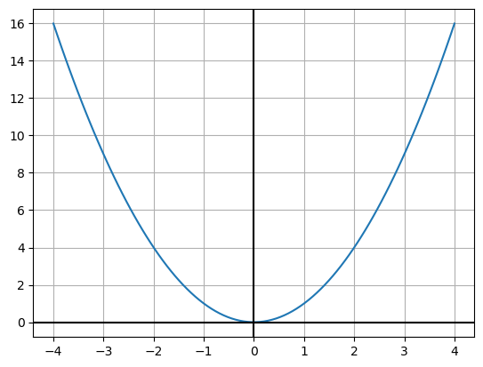
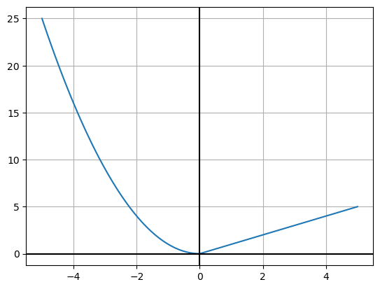
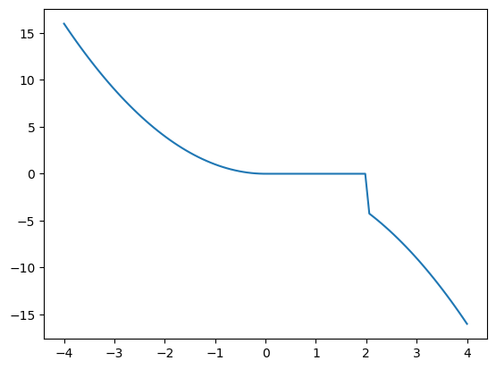
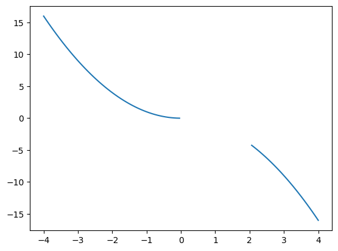

7 Plotting
7.1 Funksjonar med delt forskrift
Nokre funksjonar kan ha ulik definisjon på ulike intervall. Desse kallar me funksjonar med delt forskrift. Me ser på funksjonen
\[f(x) = \begin{cases} x^2 & \text{for } x \leq 0 \\ x & \text{for } x > 0 \end{cases}\]
Denne kan definerast med numpy.piecewise().
Startar med å definera funksjonen. Det gjer me med
der condlist er ei liste med betingelse/intervall og funclist funksjonane i same rekkefølge
lambda?
Lagar ein array med 100 \(x\)-verdiar og finn vidare \(y\)-verdiane med funksjonen me definerte.
Plottar grafen:
plt.plot(x, y)
# pynt
plt.axhline(0, color="black")
plt.axvline(0, color="black")
plt.grid()
plt.show()
7.1.1 Alternativ: if/else
Ein annan måte dette kan gjerast på er å bruka betingelsar og løkker. Dette kan me gjera slik:
# definerer funksjonen
def f(x):
if x <= 0:
return x**2
else:
return x
# lager x-verdiar
x_verdiar = np.linspace(-5, 5, 100)
# rekner ut y-verdiane
y_verdiar = [f(x) for x in x_verdiar]
# plottar
plt.plot(x_verdiar, y_verdiar)
# pynt
plt.axhline(0, color="black")
plt.axvline(0, color="black")
plt.grid()
plt.show()
7.1.2 Diskontinuerlege funksjonar
Framgangsmåten over med piecewise kan brukast for funksjonar som er definert for alle \(x\)-verdiar mellom nederste og øverste del av definisjonsmengda. Om ein har ein funksjon med delt definisjonsmengde som td.
\[h(x) = \begin{cases} x^2 & \text{for } x \leq 0 \\ -x^2 & \text{for } x \geq 2 \end{cases}\]
må ein gjera tilpassingar. Prøver først måten me gjorde det over:
# definerer funksjonen
def h(x):
return np.piecewise(x, [x <= 0, x >= 2], [lambda x: x**2, lambda x: -x**2])
# finn x og y
x = np.linspace(-4, 4, 100)
y = h(x)
# plottar
plt.plot(x, y)
plt.show()
Her viser utfordringa med denne typen funksjonar. I staden for å teikna to kurver som ikkje heng saman, vert funksjonsverdien \(0\) når \(x\in \langle 0, 2 \rangle\). I piecewise sin dokumentasjon finn me dette:
The output is the same shape and type as x and is found by calling the functions in funclist on the appropriate portions of x, as defined by the boolean arrays in condlist. Portions not covered by any condition have a default value of 0.
Måten å løysa det på er å definera kva som skal skje i intervallet der funksjonen ikkje er definert:
# definerer funksjonen (også mellom 0 og 2)
def h(x):
return np.piecewise(x, [x <= 0, (x > 0) & (x < 2), x >= 2], [lambda x: x**2, np.nan, lambda x: -x**2])
# finn x og y
x = np.linspace(-4, 4, 100)
y = h(x)
# plottar
plt.plot(x, y)
plt.show()
Her er intervallet (x > 0) & (x < 2) definert ved funksjonen np.nan (not a number). På denne måten unngår me at funksjonsverdien vert sett til 0 automatisk i mellomrommet mellom dei to intervalla som utgjer definisjonsmengda.